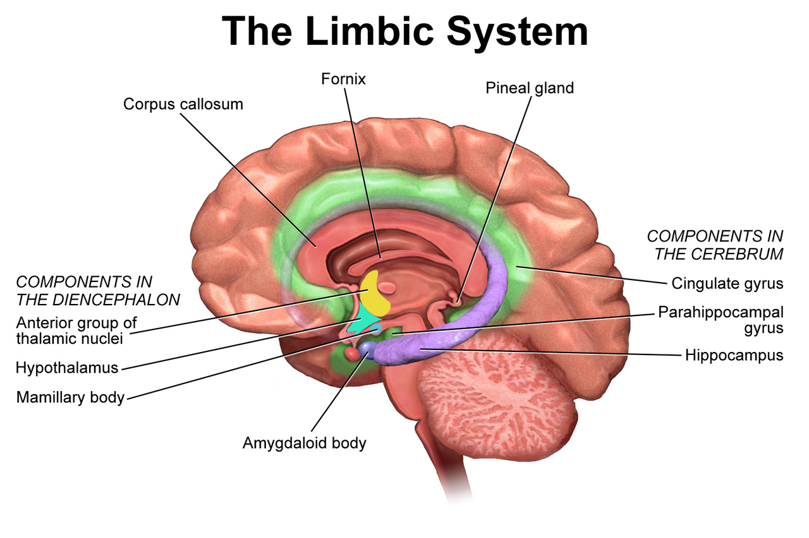

Hiện Tượng "Ngập Lụt Sinh Lý" (Diffuse Physiological Arousal - DPA)
Trong các thử nghiệm tại "Love Lab" (Gottman & Levenson, JPSP), các nhà nghiên cứu đã quan sát thấy một hiện tượng sinh học đồng nhất xảy ra ở mọi cuộc cãi vã leo thang: 1. Khi cuộc tranh cãi chuyển sang hướng chỉ trích hoặc xúc phạm, hệ thần kinh giao cảm bị kích hoạt với tốc độ ánh sáng. 2. Tuyến thượng thận bơm một lượng lớn Adrenaline và Noradrenaline vào máu. 3. Nhịp tim tăng vọt vượt ngưỡng 100 nhịp/phút (thậm chí lên tới 130–140 bpm ở người đang ngồi yên trên ghế). 4. Áp lực máu tăng cao, hơi thở trở nên nông và nhanh, đồng tử giãn to.
Trạng thái này được các nhà khoa học gọi là Ngập Lụt Cảm Xúc (Flooding). Khi bị ngập lụt, vùng vỏ não trước trán (Prefrontal Cortex)—nơi chịu trách nhiệm cho tư duy thấu cảm, khả năng hài hước và phân tích logic—bị phong tỏa hoàn toàn. Con người rơi vào trạng thái phòng thủ nguyên thủy: Chiến đấu (gào thét, xúc phạm) hoặc Bỏ chạy (đập bàn, bỏ đi).
Mọi nỗ lực "giải quyết vấn đề bằng lý lẽ" trong lúc một trong hai người đang bị ngập lụt sinh lý chắc chắn 100% sẽ thất bại và chỉ làm tổn thương mối quan hệ sâu sắc hơn!

Vì Sao Phải Dừng Lại Đúng 20 Phút? Khoa Học Về Sự Chuyển Hóa Adrenaline
Tại sao không phải là nghỉ 5 phút hay nghỉ 2 tiếng? - Nghiên cứu sinh hóa mạch máu chứng minh: Khi adrenaline và cortisol đã ngập tràn trong dòng máu, cơ thể con người cần tối thiểu 20 đến 30 phút để các enzyme gan và thận lọc sạch các hormone này, đưa nhịp tim và trương lực cơ bắp trở về mức bình thường. - Lưu ý sống còn trong 20 phút tạm dừng: Bạn tuyệt đối không được ngồi một mình để nhai lại những suy nghĩ oán hận ("Cô ta quá đáng lắm rồi!", "Lần này mình phải cho anh ta biết tay!"). Việc suy nghĩ tiêu cực sẽ kích hoạt tuyến thượng thận tiết thêm adrenaline mới, khiến cơn ngập lụt kéo dài hàng giờ! - Hãy làm một việc hoàn toàn trung tính: Nghe một bản nhạc không lời, rửa mặt bằng nước mát, đi dạo 1 vòng quanh nhà hoặc đọc một vài trang sách.
Nghệ Thuật Sử Dụng "Tín Hiệu Sửa Chữa" (Repair Attempts)
Theo Tiến sĩ John Gottman, sự khác biệt lớn nhất giữa những cặp đôi hạnh phúc và những cặp đôi đổ vỡ không phải là họ không cãi nhau, mà là họ biết cách sử dụng Tín Hiệu Sửa Chữa (Repair Attempts)—những câu nói hoặc cử chỉ nhằm hạ nhiệt cuộc tranh cãi trước khi nó vượt tầm kiểm soát:
| Nhóm Tín Hiệu Sửa Chữa | Ví Dụ Câu Nói Thực Tế Đầy Quyền Lực | Tác Động Lên Tâm Lý Đối Phương |
|---|---|---|
| Thừa Nhận Tình Trạng Kích Động | "Anh/em thấy tụi mình đang bị cuốn đi quá xa rồi, mình dừng lại một chút nhé." | Giúp đối phương nhận diện cả hai đang mất bình tĩnh, không coi đây là cuộc chiến thắng - thua. |
| Nhận Một Phần Trách Nhiệm | "Anh xin lỗi vì đã lớn tiếng ngắt lời em, em nói tiếp đi anh đang nghe." | Lập tức vô hiệu hóa thế phòng thủ của đối tác; tạo ra sự an toàn cảm xúc. |
| Khẳng Định Tình Yêu & Sự Gắn Kết | "Anh rất yêu em, dù tụi mình đang bất đồng về việc này nhưng anh luôn đứng về phía em." | Tách rời vấn đề tranh cãi ra khỏi sự tồn vong của tình yêu lứa đôi. |
| Sử Dụng Sự Hài Hước Nhẹ Nhàng | Mỉm cười, làm một cử chỉ hài hước tự châm biếm bản thân: "Nhìn hai đứa mình lúc này buồn cười thật đấy!" | Kích hoạt giải phóng endorphin, hạ nhịp tim của cả hai người chỉ sau vài giây. |
Giao Thức 4 Bước Quản Trị Xung Đột Thông Minh Cho Cặp Đôi
- Giao Kèo Một "Từ Khóa Khẩn Cấp" (Safe Word): Thống nhất trước với nhau một từ khóa (ví dụ: "Đèn Vàng" hoặc "Hạ Nhiệt"). Khi một trong hai người hô từ khóa này trong lúc tranh cãi, cả hai bắt buộc phải dừng nói ngay lập tức và tách nhau ra trong 20 phút.
- Thực Hành Hít Thở 4-7-8 Để Hạ Nhịp Tim: Trong 20 phút nghỉ: Hít vào bằng mũi 4 giây → Giữ hơi 7 giây → Thở ra từ từ bằng miệng kéo dài 8 giây. Thực hiện 4 chu kỳ giúp kích hoạt dây thần kinh phế vị, đưa nhịp tim xuống dưới 75 bpm.
- Quay Trở Lại Bằng Tư Thế "Ngồi Cạnh Nhau, Không Ngồi Đối Diện": Khi ngồi đối diện nhìn chằm chằm vào mắt nhau, não bộ dễ coi đó là tư thế khiêu chiến. Hãy ngồi cạnh nhau trên sofa hoặc cùng đi dạo song song—tư thế này giúp cả hai cùng nhìn về một hướng để giải quyết vấn đề.
- Áp Dụng Công Thức "Phàn Nàn Lành Mạnh": - Bước 1: Nêu cảm xúc: "Anh/em cảm thấy lo lắng/quá tải..." - Bước 2: Nêu sự việc cụ thể (không dùng từ "luôn luôn" hoặc "chẳng bao giờ"): "...khi việc này xảy ra..." - Bước 3: Nêu nhu cầu tích cực: "...anh/em muốn tụi mình cùng nhau lên kế hoạch cụ thể hơn".
Tài Liệu Tham Khảo & Nguồn Y Khoa
- Gottman, J. M., & Levenson, R. W. (1992). Marital processes predictive of later dissolution: behavior, physiology, and health. Journal of Personality and Social Psychology, 63(2), 221–233. Báo Cáo Nghiên Cứu Gốc (NCBI PubMed: 1403613) ↗
- Levenson, R. W., & Gottman, J. M. (1983). Marital interaction: physiological linkage and affective exchange. Journal of Personality and Social Psychology, 45(3), 587–597. Tạp chí APA PsycNet (PMID: 6620126) ↗
- Gottman, J. M. (1999). The Marriage Clinic: A Scientifically-Based Marital Therapy. W. W. Norton & Company. Tài Liệu Nghiên Cứu Gốc Xác Thực ↗
- Markman, H. J., Stanley, S. M., & Blumberg, S. L. (2010). Fighting for Your Marriage: Positive Steps for Preventing Divorce and Preserving a Lasting Love. Jossey-Bass. Tạp chí Wiley ↗